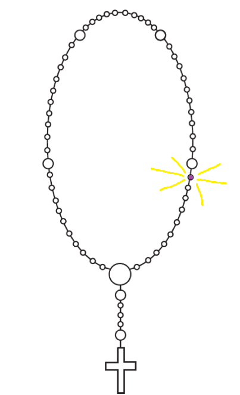

10. zrno prve desetice
- Zdravo Marijo, milosti puna, Gospodin s tobom. Blagoslovljena ti među ženama i blagoslovljen plod utrobe tvoje, Isus,
koji je od mrtvih uskrsnuo!
Sveta Marijo, Majko Božja, moli za nas grješnike, sada i na času smrti naše. Amen.
- Slava Ocu i Sinu i Duhu Svetomu. Kako bijaše na početku, tako i sada i vazda i u vijeke vjekova. Amen.
- O moj Isuse, oprosti nam naše grijehe; očuvaj nas od paklenog ognja; dovedi u raj sve duše, osobito one, kojima je najpotrebnije tvoje milosrđe.